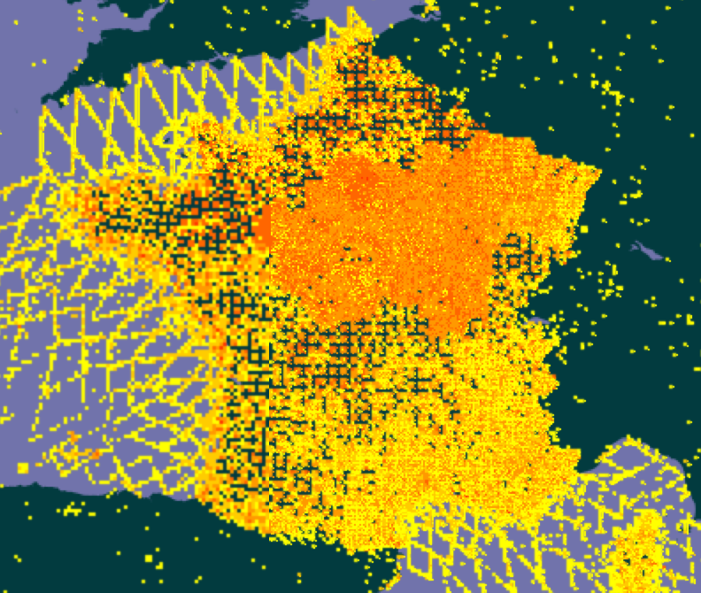

Les données françaises sur la biodiversité
Les métadonnées
Information sur les institutions et collection françaises sur la biodiversité. Vous retrouvez la description, les contacts et autres informations pratiques sur les acteurs français principaux en biodiversité
Jeux de données
Information sur les jeux de données des institutions ou collections participants au GBIF (licence, citation, etc.)
Explorer par aires
Exploration des occurrences situées dans une zone de 5 ou 10 km autour d'un point donné.